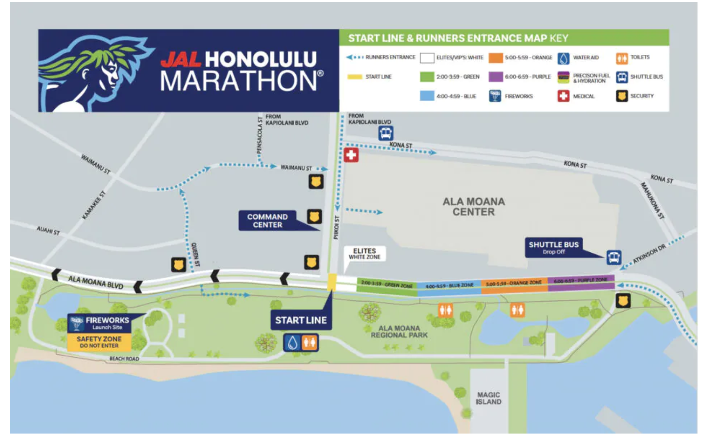

📋 事前に知っておくこと
🎫 エントリーと「色」の決まり方
- 第1期エントリー締切: 10/19（月）23:59。第2期は 10/23〜11/18 で値上がり。まだなら今週〜来週に
- スタートの並び順（色）はエントリー時に申告した完走予想タイムで決まる。6時間以上 → PURPLE（紫）
- 2人で一緒にスタートしたいなら、遅い方のタイムで2人とも申告する（速い色の人は遅い色のゾーンに下がれるが、逆は不可）
- 記録はネットタイム（スタートのマット通過→ゴール）。後ろから出ても損しない。完走証にもネットタイムが載る
- 完走証は WEB ダウンロード。紙が欲しければ翌日 12/14 のフィニッシャーマンデー（カピオラニ公園）へ
- 出典: JALホノルルマラソン 大会要項
🏨 ホテルの考え方（スタートとゴールは別の場所）
- スタート = アラモアナ公園前、ゴール = カピオラニ公園。約4 km 離れている（新宿〜渋谷くらい）
- スタート側に泊まる最大の利点は「トイレ」。会場の仮設トイレは長蛇の列。部屋で済ませてギリギリに出られる
- 2025年はスタート前に土砂降り。近いホテルならギリギリまで部屋で雨宿りできる
- 弱点はゴール後にホテルまで約4 km。大会トロリーは当日運行なし。TheBus・タクシー・Uber・biki で帰る（2泊目をゴール側にしてあるなら解決）
- 2026年1月からハワイの宿泊税が値上げ。待っても安くならないので無料キャンセル可で早めに押さえる
- 出典: chot-hawaii ホテルの場所の選び方 ／ やさぐれすね子さんブログ
📆 前日 12/12（土）のやること
- EXPO（ハワイ・コンベンションセンター、木〜土）でゼッケン・計測タグ・参加Tシャツ・公式クリアバッグを受け取る。土曜が最終日
- Clothing Check-In: カピオラニ公園（ゴール）で土曜 10:00〜17:00のみ。ゼッケン番号を書いた公式クリアバッグに、ゴール後の着替え・サンダル・タオルを入れて預ける。当日スタート地点では預けられない。回収は日曜 15:00 まで
- ABCストアで朝食を買っておく（おにぎり・バナナ・カップ味噌汁・カステラ）。3時に開いている店は少ない
- 7:00 のカラカウア・メリーマイル（1.6 km ファンラン）は走らない。脚を温存
- 夕食 17〜18時に炭水化物、20時就寝。緊張で眠れなくても完走できる（6時間半完走者も前夜は眠れなかった）
- 出典: 公式 Getting to the Start ／ note: 練習ほぼゼロで6時間半完走
🎒 持ち物（身につける／ポーチ）
- ゼッケン＋留め具（安全ピン or ゼッケン留め）。計測タグはゼッケン裏
- 捨てていい上着 or ゴミ袋ポンチョ（待機中の冷え・雨対策。直前に脱いでコース脇へ → 寄付される）
- キャップ・サングラス・日焼け止め（SPF30+）
- ワセリン（股・脇・足指・乳首）。出発前に塗る
- 補給: 食べ慣れたジェル／羊羹を6〜8個、塩タブレット
- スマホ（ジップ袋）・カード・現金少し・ホテルのカードキー・ID（パスポートコピー）
- 携帯トイレ or ティッシュ、絆創膏、常備薬
- 靴・靴下・ウェアは練習で使ったもの。新品は持ち込まない
- 出典: CREX 参加完全ガイド
🌤️ 天気・気温の現実
- 5時: 20℃前後。海風で体感はもっと低く、半袖だと肌寒い
- 7時過ぎに日が出てから一気に 25℃以上。日差しが強烈
- 乾季でも「シャワー」（にわか雨）あり。2025年は土砂降りスタート
- 対策: 待機は捨て上着、走り出したら半袖、日が出たらキャップ＋水を頭からかぶる
🏁 ゴール後の流れ
- ゴール → 完走メダル・完走Tシャツ受け取り → 写真 → 水・フルーツ
- Clothing Check-In で荷物回収（15:00 まで。過ぎると寄付）。サンダルに履き替えが至福
- 紙の完走証は翌日フィニッシャーマンデーで。WEB は当日〜数日で公開
- ゴール側ホテルなら徒歩。スタート側に戻るなら TheBus/Uber（規制で遠回りあり）
- 当日夜は塩分・たんぱく質・水。翌日は海を歩くと脚の回復が早い
📚 続けて読むとよい情報源
- やさぐれすね子さん（アメブロ）: 2013年から毎日ホノルルマラソン情報を発信。ツアー・エントリー・現地事情が最速
- hono-mara.com コース攻略: リピーターによる区間ごとの注意点。給水所の取り方はここから
- note: 運動経験ゼロからホノマラ2026完走を目指す人: 同じ年の同じ目標の人。心拍120・LSD・「速くなるのはその先」
- note: 初心者が3ヶ月で笑顔で走りきる方法: 「遅いかな？でちょうどいい」「時計より呼吸」
🏁 スタート & ラン中
🟣 立ち位置: PURPLE は最後尾、Atkinson Dr 側に並ぶ
- スタートラインは Ala Moana Blvd × Piikoi St。そこから東（ワイキキ方向）へ WHITE → GREEN → BLUE → ORANGE → PURPLE の順に並ぶ。PURPLE ゾーンの東端が Atkinson Dr（アラモアナセンターの東の端）
- PURPLE からスタートラインまでは約 700 m〜1 km。号砲（5:00・花火）のあと人波と一緒にゾロゾロ前進し、マット通過は 5:20〜5:30 ごろ。この移動がそのままウォームアップ。距離にもタイムにも入らない
- スタートエリアへは正面（スタートラインの西側）からは入れない。入口は Piikoi St・Atkinson Dr・ワイキキ側から Ala Moana Blvd を歩いてくるの3つ。ワイキキ西端のホテルなら Ala Moana Blvd をまっすぐ歩けば PURPLE の列の後ろに着く
- 仮設トイレはアラモアナ公園側（コラールの海側）に数か所。部屋で済ませてから出るのが鉄則
- 自分の色より前のゾーンには入れない（後ろには下がれる）。10K ラン&ウォークの人も同じ列
- 出典: 公式 Start Line & Runners Entrance Map（ホテル地図タブに掲載）
⏰ 当日朝のタイムライン（スタート側ホテルの場合）
- 2:45起床。カーテン開けて雨チェック。朝食（おにぎり＋バナナ＋味噌汁）
- 3:20着替え → ワセリン → 日焼け止め → ゼッケン確認 → トイレ①
- 3:45トイレ②、捨て上着を着て出発。スマホ・補給・カードキー確認
- 4:05Ala Moana Blvd を西へ。Atkinson Dr の手前で PURPLE ゾーンへ
- 4:30紫の旗の下に整列。ストレッチ・写真・補給ひとつ
- 5:00花火 → 号砲。動き出すまで数分、歩いて前進
- 5:25マット通過。捨て上着はここまでに脱いで脇へ。最初の 2 km は人波で走れない→焦らない
シャトル（動物園→スタート 2:00〜4:00）を使う場合は 3:00〜3:30 が大行列。スタート側泊なら不要
💧 給水所の取り方 3か条（初心者が一番失敗するところ）
- 必ず歩いて取りに行く。入口は人が殺到してぶつかる
- 奥のテーブルで取る。手前は激混み、少し先は空いている。ボランティアの手から受け取る
- 紙コップの口を潰して鳥のくちばし状にして、歩きながら飲む。走りながら飲むとむせる
- 最初の給水は約 4 km。最初の2か所は水だけ、ゲータレードはその後から
- エイドは全 17か所、約 3〜4 km ごと。後半はバナナも出る
- 私設エイド（地元の人）: ホースの水シャワー・カットフルーツ・プレッツェル・氷。遠慮せずもらう
- 出典: hono-mara.com ／ CREX
🍌 補給スケジュール（6〜7時間用）
- エイドごとに必ず一口は飲む（喉が渇く前に）。基本はスポドリ、水は頭からかぶる用
- 45分ごとに1個食べる（ジェル／羊羹）。30 km 以降は食べたくなくても口に入れる
- 10 km ごとに塩タブレット。足つり予防
- カフェイン入りジェルは残り 10〜7 km で投入（利尿作用があるので序盤は避ける）
- 胃が疲れたら固形物をやめてスポドリ＋バナナに切り替え
- 出典: エイド補給の基礎知識
🗺️ コース区間ごとの注意点
- 0〜3 km ダウンタウン往路: 暗い・混雑・花火とイルミ。歩く流れに乗る。ここで速くしても得なし
- 3〜6 km 復路: ホノルル・シティライツの巨大サンタ（みんな写真を撮る）。4 km 手前で最初の給水（水のみ）
- 6〜8 km アラモアナ→カラカウア通り: スタート地点の横を通り、コースが狭くなって混む（7 km の給水所あたりから）
- 8〜10 km ワイキキ中心: カラカウア通りのど真ん中。応援が一番多い。10 km でゴール（カピオラニ公園）の横を通る→「まだ3倍ある」ではなく「もう1/3終わった」と言い換える
- 11〜14 km ダイヤモンドヘッド往路: 高低差約 35 m。登りは全部歩く、進行方向右側を使う（復路と共用の道）。ここで日の出（7時前）
- 14〜18 km カハラ → ハイウェイ: 高級住宅街、応援が減って静か。ペースを刻む
- 18〜35 km ハワイカイ往復: 長くて単調、日が高くなって暑い。一番つらい区間。音楽・景色・「次の給水所まで」で刻む。私設エイドが多いのもここ
- 35〜38 km ダイヤモンドヘッド復路の登り: 疲労ピークでの登り。全部歩いていい。登りきると海とワイキキの景色
- 38〜42 km 下り → カピオラニ公園: 下りで脚にブレーキがかかるので歩幅小さく。最後の直線は応援の壁。笑って入る
- 距離表示は km とマイル両方。マイル × 1.6 = km（5マイル ≒ 8 km）
- 出典: hono-mara.com コース攻略
🩹 痛みが出たときの手順（本番用）
- まず歩く比率を上げる（走4:歩1 → 走2:歩1 → 走1:歩1 → 全部歩く）。歩いても7時間半でゴールできる
- 「次の標識まで」「10 m だけ走って次は歩く」と小さく刻む（7 km で相方の足が痛んだ2人組が、これで6時間半完走）
- 靴紐をゆるめる／靴下を直す／ワセリンを塗り直す、で治る痛みも多い
- 医療テントはエイド付近。足を引きずる・吐き気・寒気は迷わず相談
- 出典: note: 練習ほぼゼロで6時間半完走
🧠 メンタルのコツ
- 「遅いかな？」でちょうどいい。前半の貯金はぜんぶ後半の借金になる
- 時計より呼吸。「会話できる速さ」なら最後まで持つ
- 30 km 以降はキロ表示を見ない。給水所から給水所へ
- イヤホンより沿道の声を聞く。「アロハ！」「がんばれ！」が本当に脚を動かす
- 制限時間なし。完走率は例年 98% 以上。最後の1人までゴールで待っている
- 出典: note: 初心者が3ヶ月で笑顔で走りきる方法
🏨 スタート側ホテル地図（12/12→13・1泊・2名・税込目安）
左: 公式「Start Line & Runners Entrance Map」。右: その東側（Ala Wai 運河を渡ったワイキキ西端）を同じ縮尺感で足したもの。位置は概略。価格は Booking.com 10/2 時点の税・手数料込み、$1≒¥150。横にスクロールできます。
$330以下$330〜400$400超1泊売りなし／空きなし

🟣 PURPLE はここに並ぶラインまで約0.7〜1 km
⬅ 入口: Atkinson Drワイキキ側から歩いて入る
Ala Moana Hotel1泊売りなし（Trip.com ¥130k）
↑ Pagoda（北へ約600 m）¥48,000 / $320 ・ 7.9
↑ Renaissance HonoluluKapiolani Blvd 山側 ・ Booking 空きなし
一覧（PURPLE 集合地点＝Atkinson Dr × Ala Moana Blvd までの距離順）
| ホテル | 集合地点まで | 税込目安 | 評価 | 法人レート | メモ |
|---|---|---|---|---|---|
| Ilikai Hotel & Luxury Suites | 約0.4 km | ¥60,700 / $405 | 8.4 | — | 最寄り。フルキッチン。$400ぎりぎり超え |
| ★ Ramada Plaza by Wyndham Waikiki | 約0.5 km | ¥49,400 / $330 | 8.0 | Wyndham: 未確認 | コスパ本命。Ala Moana Blvd 沿い、まっすぐ歩くだけ |
| DoubleTree by Hilton Alana Hilton | 約0.5 km | ¥67,200 / $450 | 7.8 | fee込 $459（確認済） | 立地は◎だが予算超え |
| Hawaiian Monarch | 約0.7 km | ¥37,300 / $250 | 6.3 | — | 唯一の予算内。寝るだけなら可。古い・狭い |
| Hilton Hawaiian Village Hilton | 約1.0 km | ¥62,700 / $415 | 8.0 | 要確認 | 巨大リゾートで部屋→出口が遠い |
| Holiday Inn Express Waikiki IHG | 約1.0 km | ¥58,800 / $390（朝食込） | 8.0 | 20%レートなら ≈¥47k | 朝食は4時には開いていないので実質なし |
| Ambassador Hotel of Waikiki Hilton | 約1.0 km | ¥58,700 / $390 | 8.2 | 要確認 | Kuhio Ave 西端 |
| Pagoda Hotel | 約1.0 km（Piikoi 入口） | ¥48,000 / $320 | 7.9 | — | アラモアナ山側。Ramada より遠くて同価格帯 |
| Prince Waikiki | 約0.4 km | ¥89,300 / $595 | 8.9 | — | 上層階のみ空き。予算外 |
| Ala Moana Hotel | 入口そのもの | 1泊売りなし | — | — | Trip.com は ¥130k。2泊条件の可能性 |
| Renaissance Honolulu Marriott ／ Modern Honolulu | 0.6 / 0.5 km | Booking 空きなし | 8.7 / 8.3 | 直販のみ | 直販で1泊が出れば候補 |
🎯 結論
- 第1候補: Ramada Plaza Waikiki（$330）。PURPLE 集合まで 0.5 km、Ala Moana Blvd 沿い、評価 8.0。無料キャンセル可プランで押さえる
- 財布優先なら Hawaiian Monarch（$250）。設備は古いが「3時起きで出るだけ」の用途なら十分
- Hilton 法人レートは fee 込 $459 で予算超え。Holiday Inn Express を IHG 法人レートで引けると $310 前後になる可能性があるので、Ramada と比べる価値あり
🚶 どのホテルからの歩き方（PURPLE）
- ワイキキ西端のホテルからは Ala Moana Blvd を西へ。Ala Wai 運河の橋を渡ると右手がアラモアナセンター、その手前の Atkinson Dr との交差点が PURPLE ゾーンの東端。警備員の指示で歩道からコースに入る
- Pagoda からは Kaheka/Keeaumoku を南下 → Kapiolani Blvd → Piikoi St の入口へ（約15分）。ただし Piikoi 入口はスタートライン側なので、PURPLE ゾーンまで東へ戻る形になる
- 出発は 3:45〜4:00 で十分。4:30 までに紫の旗の下にいれば OK